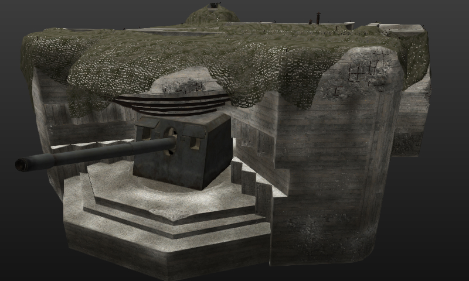

First... Get this tool! PGK Explorer makes it a snap to search and extract models and other data from the world of tanks PKG files.
Once you have that.. find a model you would like to load in Tank Exporter and extract its data
Here is a video showing the basic use of PKG Exporter.
Most of the features in Tank Exporter work with stand alone primitives.
Obviously, features to work with the tanks such as hiding each tank component is not going to function.
You can use the hide panel however.. Press 'V' to show the hide/show control panel.
Stand alone primitives also have no Blend Bone pins or vertex colors that are used in Tank Exporter.
In order to export the textures along with the models, Tank Exporter creates special textures mixed from the atlas textures.
The textures generated are large 4096 x 4096 PNG files. Anything less and the quality us unacceptable.
Not all components of a primitive set use atlas textures.. Those regular textures are exported unchanged.
The reason Tank Exporter creates these custom textures is because exporting the atlas textures is unusable.
Exporting these custom textures with the FBX can take a bit of time depending on the speed of your computer.
Tank Exporter now allows converting the normal maps in to standard tangent maps all 3D apps use.
Also, you have an option to create a texture for each model or one shared texture.
You may need to split off textures by model if the have overlapping UV mapping.
Tank Exporter will search the PKG files for files that are missing that it needs to load the primitive.
This can take some time.. Just let Tank Exporter run until it finds and loads all data for the primitives.
Tank Exporter can NOT write primitives of stand alone primitives as of now! It will probably crash TE if you try.
Here is a sample of a bunker primitive model loaded in Tank Exporter...
